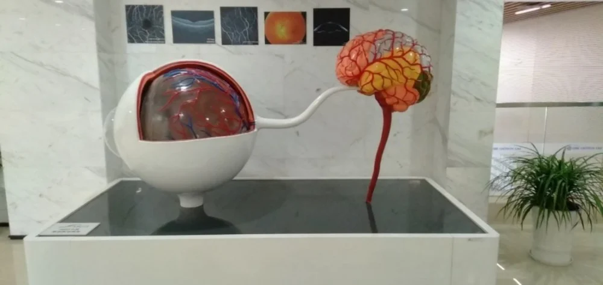

眼作为中枢神经系统的一部分,与脑具有高度的发育同源性和功能相似性, 特别是细胞的组成、神经递质功能、血供等。近日团队科研人员在权威中文医学杂志《中华精神科杂志》发表了“眼脑联动与神经精神疾病”的文章。通过对几种主要的神经发育性和退行性疾病, 如孤独症、精神分裂症、阿尔茨海默病、帕金森病等的眼、脑相关的研究结果进行系统回顾发现, 在这些神经精神类疾病中眼和脑均存在广泛的功能及结构损害。但是将眼和脑视为一个整体进行的整合研究尚且不足。文章进一步揭示了这一类将眼、脑作为一个整体进行研究的必要性、潜力和难点，并提出了相应的基于人工智能的眼脑联动研究的基本研究框架, 即“眼脑联动”框架。

眼脑联动模型
由于有关脑的检测仪器或方法如 CT、 MRI、 PET、 腰椎穿刺取脑脊液等大多对医院设施和技术要求高、价格昂贵, 使用繁琐, 或者具有一定的放射性和创伤性并不适于广泛推广, 难以用于疾病的早期筛查, 而眼的检测仪器如OCT、眼底照相机、网膜电位等仪器小巧、便携、使用简便且无创, 再加上“眼脑联动”模型的帮助, 将使得眼科仪器和检测方法非常适合用于疾病的早期查。“眼脑联动”实验室致力于通过人工智能的方法，搭建眼科和神经内外科之间的联系，建立多模态眼脑疾病联合研究框架，通过眼科数据分析脑神经系统疾病和通过脑神经系统数据分析眼科疾病，揭示其内在的联合和疾病间发展规律。
经过几年的探索，“眼脑联动”课题先后与中山眼科中心温州医科大学眼视光医院、北京同仁医院、深圳市康宁医院、国科大华美医院、北医三院、华西医院开展合作，通过进行眼脑联动研究进一步加挖掘眼脑之间的关系, 建立可解释的眼-脑计算模型, 仔细探讨眼作为脑的研究窗口的作用, 并得出通过对眼的研究估计研究脑的方法的可靠性和置信区间。期待iMED团队能够通过努力，实现对阿尔兹海默症等神经退行性疾病的早期诊断和干预做出基础性的贡献。
——王浩、岳星宇